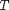
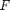
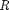
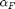
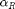
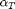
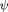
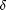
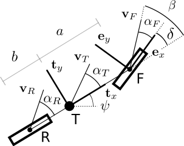

Nonlinear 2 DOF Simple Vehicle
Nonlinear bicycle model with 2 degrees of freedom.
Contents
Sintax
dx = VehicleModel.Model(~,estados)
Arguments
The following table describes the input arguments:
| estados | Estados do modelo: [dPSI ALPHAT PSI XT YT VEL] |
Description
The center of gravity of the vehicle is located at the point . The front and rear axles are located ate the points  and , respectively. The constant measures the distance of point to and the distance of point to . The angles  e  are the front and rear slip angles, respectively.  is the vehicle side slip angle and  is the vehicle yaw angle.  is the steering angle.

Code
classdef VehicleSimpleLinear2DOF < VehicleDynamicsLateral.VehicleSimple
methods
% Constructor function self = VehicleSimpleLinear2DOF(varargin) if nargin == 0 % Vehicle data m = 2527; % [kg] Iz = 6550; % [kgm2] lf = 1.37; % [m] lr = 1.86; % [m] mF0 = lr*m/(lf+lr); % Mass @ F [kg] mR0 = lf*m/(lf+lr); % Mass @ R [kg] IT = Iz; % Moment of inertia [kg*m2] DELTA = 0; % Steering angle [rad] lT = lf+lr; % [m] nF = 1; % Number of tires @ F nR = 1; % Number of tires @ R largT = 2; % Width [m] muy = 0.7; % Operational friction coefficient entradaVetor = [mF0 mR0 IT DELTA lT nF nR largT muy]; % Defining class parameters self.params = self.convert(entradaVetor); self.tire = VehicleDynamicsLateral.TirePolynomial; else self.params = self.convert(varargin{1}); self.tire = varargin{2}; end self.distFT = self.params(11); self.distTR = self.params(12); self.width = self.params(8); end
Model
Function with the model
function dx = Model(self,~,estados) % Data m = self.params(10); % Vehicle total mass [kg] Iz = self.params(3); % Moment of inertia [kg] lf = self.params(11); % [m] lr = self.params(12); % [m] nF = self.params(6); % Number of tires @ F nR = self.params(7); % Number of tires @ R muy = self.params(9); % Operational friction coefficient deltaf = self.params(4); g = 9.81; % Gravity [m/s^2] vx = 20; % [m/s] FzF = self.params(1)*g; % Vertical load @ F [N] FzR = self.params(2)*g; % Vertical load @ R [N] % States vy = estados(1); r = estados(2); PSI = estados(3); % Slip angles alphaf = - deltaf + (vy + lf*r)/vx; % Front alphar = (vy - lr*r)/vx; % Rear % Lateral force Fyf = nF*self.tire.Characteristic(alphaf,FzF/nF,muy); Fyr = nR*self.tire.Characteristic(alphar,FzR/nR,muy); % State equations dvy = (Fyf*cos(deltaf) + Fyr - m*vx*r) /m; dr = (lf*Fyf*cos(deltaf) - lr*Fyr)/Iz; % State derivative dx(1,1) = dvy; dx(2,1) = dr; ALPHAT = asin(vy/vx); % Additional states for trajectory dx(3,1) = r; % dPSI dx(4,1) = vx*cos(ALPHAT + PSI); % X dx(5,1) = vx*sin(ALPHAT + PSI); % Y end
end
methods (Static)
Conversion
The parameters directly measured are typically different from the parameters in the equation of motion. Thus, a function is written to convert the entry data (entrada = [mF0 mR0 IT DELTA lT nF nR largT muy]) to the parameters vector ([entrada mT a b]).
function parametros = convert(entrada) mF0 = entrada(1); % Mass @ F [kg] mR0 = entrada(2); % Mass @ R [kg] lT = entrada(5); % [m] mT = mF0 + mR0; % Vehicle total mass [kg] a = mR0/mT*lT; % [m] b = lT - a; % [m] % Sa?da parametros = [entrada mT a b]; end
end
Properties
properties
params
tire
distFT
distTR
width
end
end